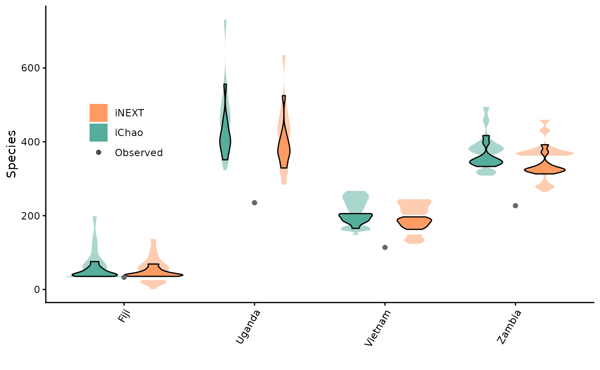

Species richness estimation
Source:vignettes/articles/Species_richness_estimation.Rmd
Species_richness_estimation.Rmd
This is a basic workflow for feeding species occurrence data, a
group’s taxonomy, and a group’s country checklist into BeeBDC in order
to produce species richness estimates. Some of these functions are also
generic wrappers around SpadeR and iNEXT
functions that can be used with any abundance data. These functions have
grown from an original publication.
Script preparation
Working directory
Choose the path to the root folder in which all other folders can be found.
RootPath <- paste0("/your/path/here")
# Create the working directory in the RootPath if it doesn't exist already
if (!dir.exists(paste0(RootPath, "/Data_acquisition_workflow"))) {
dir.create(paste0(RootPath, "/Data_acquisition_workflow"), recursive = TRUE)
}
# Set the working directory
setwd(paste0(RootPath, "/Data_acquisition_workflow"))Install packages (if needed)
You may need to install some packages for using this workflow. In
particular, SpadeR and iNEXT are required.
They should prompt you to download them the first time that you run the
functions, however, let’s install them here and now.
install.packages("SpadeR")
install.packages("iNEXT")Parallel estimations
We can start by looking at the relatively simple iNEXT
and SpadeR wrapper functions that can take the usual inputs
for those functions in their host packages. (See
iNEXT::iNEXT() and SpadeR::ChaoSpecies() for
more info.) These functions can take your data and run multiple
sites/countries/whatever level you want to throw at them and run them in
parallel. This greatly simplifies the code needed to run them and also
makes its implementation MUCH faster!
iNEXTwrapper
BeeBDC::iNEXTwrapper() parallelizes
iNEXT::iNEXT(), which estimates species richness patterns
by extrapolating and interpolating Hill numbers. By and large this kinda
equates to estimating richness by rarefaction. We can start by reading
in an example dataset with 1,488
scientificName-country_suggested combinations across four
countries; Fiji, Uganda, Vietnam, and Zambia.
beesCountrySubset <- BeeBDC::beesCountrySubsetNext, let’s look at how we would usually use iNEXT… By first transforming our (very simple example) occurrence dataset into the right format and then running the function.
# Transform the data
transformedAbundance <- beesCountrySubset %>%
dplyr::group_by(scientificName, country_suggested) %>%
dplyr::count() %>%
dplyr::select(scientificName, country_suggested, n) %>%
tidyr::pivot_wider(names_from = country_suggested, values_from = n, values_fill = 0) %>%
# Create the rownames
tibble::column_to_rownames("scientificName") %>%
dplyr::tibble() %>%
as.data.frame()
# Run iNEXT
output_iNEXT <- iNEXT::iNEXT(transformedAbundance, datatype = "abundance")We can also view the output of this function by running
output_iNEXT$AsyEst
| Assemblage | Diversity | Observed | Estimator | s.e. | LCL | UCL |
|---|---|---|---|---|---|---|
| Fiji | Species richness | 17.000000 | 17.499483 | 1.4850098 | 17.000000 | 20.410049 |
| Fiji | Shannon diversity | 4.712056 | 4.754101 | 0.2164397 | 4.329887 | 5.178315 |
| Fiji | Simpson diversity | 2.653013 | 2.657561 | 0.1237356 | 2.415044 | 2.900078 |
| Uganda | Species richness | 44.000000 | 70.243359 | 14.1752423 | 44.000000 | 98.026324 |
| Uganda | Shannon diversity | 19.651483 | 26.633143 | 3.4844763 | 19.803695 | 33.462591 |
| Uganda | Simpson diversity | 7.699248 | 8.128000 | 1.5689856 | 5.052845 | 11.203155 |
| Vietnam | Species richness | 6.000000 | 13.794872 | 5.8924098 | 6.000000 | 25.343783 |
| Vietnam | Shannon diversity | 1.953128 | 2.307552 | 0.5923478 | 1.146572 | 3.468532 |
| Vietnam | Simpson diversity | 1.386509 | 1.400756 | 0.1986146 | 1.011479 | 1.790034 |
| Zambia | Species richness | 129.000000 | 186.853965 | 17.7824798 | 152.000945 | 221.706985 |
| Zambia | Shannon diversity | 77.832700 | 104.647375 | 7.6001195 | 89.751415 | 119.543336 |
| Zambia | Simpson diversity | 32.753790 | 35.991359 | 6.3494595 | 23.546647 | 48.436071 |
The implementation of BeeBDC::iNEXTwrapper() is also
relatively simple; including the implementation of running in parallel
(Note: Windows machines can’t use R’s parallel
functions). We can again modify the input data to work with the
function as below and we could leave most of the inputs to iNEXTwrapper
to the defaults or change them as we saw fit. The key variable is to
change mc.cores to however many threads you’d liek to use
on your computer!
# Transform data
data_nextWrapper <- beesCountrySubset %>%
dplyr::group_by(scientificName, country_suggested) %>%
dplyr::count()
# Calculate iNEXT with the wrapper function
output_iNEXTwrapper <- BeeBDC::iNEXTwrapper(data = data_nextWrapper, variableColumn = "country_suggested",
valueColumn = "n", q = 0, datatype = "abundance", conf = 0.95, se = TRUE, nboot = 50,
size = NULL, endpoint = NULL, knots = 40, mc.cores = 1)## - Outputs can be found in a list with two tibbles called 'DataInfo' and 'AsyEst' and a list of iNext outputs per groupVariable in iNextEst'.| country_suggested | statistic | Observed | Estimator | Est_s.e. | 95% Lower | 95% Upper |
|---|---|---|---|---|---|---|
| Fiji | Species Richness | 17.000000 | 17.499483 | 1.6650163 | 14.236111 | 20.762855 |
| Fiji | Shannon diversity | 4.712056 | 4.754101 | 0.2271829 | 4.308831 | 5.199372 |
| Fiji | Simpson diversity | 2.653013 | 2.657561 | 0.1264695 | 2.409685 | 2.905436 |
| Uganda | Species Richness | 44.000000 | 70.243359 | 25.7541584 | 19.766137 | 120.720582 |
| Uganda | Shannon diversity | 19.651483 | 26.633143 | 4.2573468 | 18.288896 | 34.977389 |
| Uganda | Simpson diversity | 7.699248 | 8.128000 | 1.8631187 | 4.476354 | 11.779646 |
| Vietnam | Species Richness | 6.000000 | 13.794872 | 6.1393736 | 1.761921 | 25.827823 |
| Vietnam | Shannon diversity | 1.953128 | 2.307552 | 0.5633747 | 1.203358 | 3.411746 |
| Vietnam | Simpson diversity | 1.386509 | 1.400756 | 0.1830418 | 1.042001 | 1.759511 |
| Zambia | Species Richness | 129.000000 | 186.853965 | 18.1990609 | 151.184461 | 222.523469 |
| Zambia | Shannon diversity | 77.832700 | 104.647375 | 6.8285323 | 91.263698 | 118.031053 |
| Zambia | Simpson diversity | 32.753790 | 35.991359 | 5.5923079 | 25.030637 | 46.952081 |
ChaoWrapper
BeeBDC::ChaoWrapper() parallelizes
SpadeR::ChaoSpecies(), which estimates species richness
using various non-parametric estimators. The primary one that I tend to
use is iChao. Let’s use the same example dataset to first run the
SpadeR function.
# Transform data
data_iChao <- beesCountrySubset %>%
dplyr::group_by(scientificName, country_suggested) %>%
dplyr::count() %>%
dplyr::select(scientificName, country_suggested, n) %>%
tidyr::pivot_wider(names_from = country_suggested, values_from = n, values_fill = 0) %>%
# Create the rownames
tibble::column_to_rownames("scientificName") %>%
dplyr::tibble()
# Run ChaoSpecies for the country Fiji
output_iChao <- SpadeR::ChaoSpecies(data_iChao$Fiji, datatype = "abundance")Let’s view the output of this function by running
output_iChao$Species_table. Once again, you’ll be able to
see that there are actually quite a few species richness estimators
available here.
| Estimate | s.e. | 95%Lower | 95%Upper | |
|---|---|---|---|---|
| Homogeneous Model | 17.182 | 0.474 | 17.011 | 20.015 |
| Homogeneous (MLE) | 17.000 | 0.633 | 17.000 | 18.858 |
| Chao1 (Chao, 1984) | 17.499 | 1.322 | 17.030 | 25.434 |
| Chao1-bc | 17.000 | 0.633 | 17.000 | 18.858 |
| iChao1 (Chiu et al. 2014) | 17.624 | 1.322 | 17.048 | 25.048 |
| ACE (Chao & Lee, 1992) | 17.342 | 0.775 | 17.024 | 21.788 |
| ACE-1 (Chao & Lee, 1992) | 17.366 | 0.835 | 17.026 | 22.168 |
| 1st order jackknife | 17.999 | 1.413 | 17.128 | 24.796 |
| 2nd order jackknife | 18.000 | 2.446 | 17.065 | 32.367 |
The implementation of the parallel wrapper is also quite simple for
BeeBDC::ChaoWrapper(). And the number of cores can also be
changed using the mc.cores argument. Note, that in this
case, we can run all sites (or countries) at once!
# Run the wrapper function
output_iChaowrapper <- BeeBDC::ChaoWrapper(data = data_iChao, datatype = "abundance",
k = 10, conf = 0.95, mc.cores = 1)## - Outputs can be found in a list with two tibbles called 'basicTable' and 'richnessTable'.View the output with
output_iChaowrapper$richnessTable.
| variable | Name | Estimate | s.e. | 95%Lower | 95%Upper |
|---|---|---|---|---|---|
| Zambia | Homogeneous Model | 159.936 | 8.471 | 147.263 | 181.402 |
| Zambia | Homogeneous (MLE) | 140.234 | 3.957 | 134.748 | 150.959 |
| Zambia | Chao1 (Chao, 1984) | 186.854 | 20.305 | 158.664 | 241.834 |
| Zambia | Chao1-bc | 183.879 | 19.243 | 157.155 | 235.970 |
| Zambia | iChao1 (Chiu et al. 2014) | 199.091 | 12.645 | 178.353 | 228.541 |
| Zambia | ACE (Chao & Lee, 1992) | 183.240 | 15.921 | 159.876 | 224.286 |
| Zambia | ACE-1 (Chao & Lee, 1992) | 197.138 | 22.684 | 165.093 | 257.634 |
| Zambia | 1st order jackknife | 185.839 | 10.654 | 168.488 | 210.814 |
| Zambia | 2nd order jackknife | 214.754 | 18.422 | 185.553 | 259.032 |
| Uganda | Homogeneous Model | 59.952 | 7.062 | 50.961 | 80.554 |
| Uganda | Homogeneous (MLE) | 47.113 | 2.032 | 44.969 | 54.004 |
| Uganda | Chao1 (Chao, 1984) | 70.243 | 14.659 | 53.450 | 116.878 |
| Uganda | Chao1-bc | 66.820 | 12.672 | 52.261 | 107.041 |
| Uganda | iChao1 (Chiu et al. 2014) | 76.243 | 8.394 | 63.519 | 97.262 |
| Uganda | ACE (Chao & Lee, 1992) | 78.927 | 16.764 | 58.308 | 129.256 |
| Uganda | ACE-1 (Chao & Lee, 1992) | 95.184 | 30.929 | 61.149 | 196.767 |
| Uganda | 1st order jackknife | 66.820 | 6.743 | 56.944 | 84.233 |
| Uganda | 2nd order jackknife | 79.695 | 11.623 | 63.160 | 110.499 |
| Fiji | Homogeneous Model | 17.182 | 0.474 | 17.011 | 20.015 |
| Fiji | Homogeneous (MLE) | 17.000 | 0.633 | 17.000 | 18.858 |
| Fiji | Chao1 (Chao, 1984) | 17.499 | 1.322 | 17.030 | 25.434 |
| Fiji | Chao1-bc | 17.000 | 0.633 | 17.000 | 18.858 |
| Fiji | iChao1 (Chiu et al. 2014) | 17.624 | 1.322 | 17.048 | 25.048 |
| Fiji | ACE (Chao & Lee, 1992) | 17.342 | 0.775 | 17.024 | 21.788 |
| Fiji | ACE-1 (Chao & Lee, 1992) | 17.366 | 0.835 | 17.026 | 22.168 |
| Fiji | 1st order jackknife | 17.999 | 1.413 | 17.128 | 24.796 |
| Fiji | 2nd order jackknife | 18.000 | 2.446 | 17.065 | 32.367 |
| Vietnam | Homogeneous Model | 16.000 | 12.450 | 7.501 | 72.612 |
| Vietnam | Homogeneous (MLE) | 6.009 | 0.096 | 6.000 | 6.644 |
| Vietnam | Chao1 (Chao, 1984) | 13.795 | 11.372 | 6.961 | 69.218 |
| Vietnam | Chao1-bc | 8.923 | 4.085 | 6.380 | 28.471 |
| Vietnam | iChao1 (Chiu et al. 2014) | 13.795 | 11.372 | 6.961 | 69.218 |
| Vietnam | ACE (Chao & Lee, 1992) | 16.000 | 12.450 | 7.501 | 72.612 |
| Vietnam | ACE-1 (Chao & Lee, 1992) | 16.000 | 12.450 | 7.501 | 72.612 |
| Vietnam | 1st order jackknife | 9.897 | 2.774 | 7.111 | 19.668 |
| Vietnam | 2nd order jackknife | 12.769 | 4.734 | 7.965 | 29.318 |
Visualising
These are both easy and simple to use wrapper functions. However, the
complexity of the output data types can actually be a little bit
confusing to work with. Especially if you want to visualise those data.
So, we also provide the function,
BeeBDC::ggRichnessWrapper() to display the results of both
wrapper functions by site. Not only does this functino save a plot that
visualises the data (below), it also outputs a summary of the
estimates.
(plot_summary <- BeeBDC::ggRichnessWrapper(iNEXT_in = output_iNEXTwrapper, iChao_in = output_iChaowrapper,
nrow = 2, ncol = 2, labels = NULL, fileName = "speciesRichnessPlots", outPath = tempdir(),
base_width = 8.3, base_height = 11.7, dpi = 300))## Loading required namespace: cowplot## Error:
## ! Unknown graphics device ""
Note that Fiji’s diversity seems to be reaching asymptote, but the remaining country’s species richnesses are still climbing. Vietnam in particular has a huge amount of uncertainty with the iChao estimates (green) reaching over 60 species! We knew that this was a really small dataset (in fact we chose it as a test dataset because it is small), but it goes to show that if your data are inadequate you may not get a great answer. On the plus side, the 95% confidence intervals all overlap.
## Error:
## ! object 'plot_summary' not foundYou can see, that these functions are moving towards simplifying quick and mass-estimation of species richness across sites or countries! The is the idea behind these improvements. But, we take this further below by also attempting to sample known taxa that are otherwise missing from our datasets!
Estimating richness from the known unknowns
Seems like a bit of an odd title, no? Well, many taxa have country-level checklists. Even insect taxa can be well represented in global country-level checklists; for example, ants, butterflies, dragonflies, and bees. While for vertebrates the situation is even better. Country-level global checklists often incorporate knowledge that isn’t contianed in species occurrence datasets but that, perhaps, we can take advantage of.
Preparing the inputs
In our bee species richness estimates paper, we had 4,819 species (from a total of ~21,000 species) that had no occurrence records globally. We could have run the above species richness estimates using just the occurrences that we had, but we wanted to incorporate that knowledge in our estimates. To do so, we found the samples sizes from most-recent literature for 497 species and generated a curve (we also generated this curve using the global- and country-level occurrence datasets and found the former to match the literature curve well).

We can then extract the formula from this curve and use it to
randomly generate data for those missing species. These curves can be
built using your own data; see section 1.6 of the R code for the bee species richness estimates paper, which uses
ggplot2 and mosaic’s
fitModel function to generate the curve function that goes
into BeeBDC::diversityPrepR() below.
Let’s dig in… To start with, we will make an R object using
our occurrence data (beesCountrySubset), taxonomy (from
BeeBDC::beesTaxonomy() or
BeeBDC::taxadbToBeeBDC()), and country
checklist(BeeBDC::beesChecklist() or a manually-made
checklist with the countries in the rNaturalEarth_name column
and species in the validName column; the latter must match the
remaining data — see BeeBDC::HarmoniseR()). Feel free to
explore the input files or the output list of files for modifying your
own and pay attention to match the column names.
Note as well that the curveFunction is the one generated
from the Literature curve above.
# Download the taxonomy and checklist files
taxonomyFile <- BeeBDC::beesTaxonomy()
checklistFile <- BeeBDC::beesChecklist()
# Generate the R file
estimateData <- BeeBDC::richnessPrepR(
data = beesCountrySubset,
# Download the bee taxonomy. Download other taxonomies using BeeBDC::taxadbToBeeBDC()
taxonomyFile = taxonomyFile,
# Download the bee country checklist. See notes above about making a checklist for other taxa
checklistFile = checklistFile,
curveFunction = function(x) (228.7531 * x * x^-log(12.1593)),
sampleSize = 10000,
countryColumn = "country_suggested"
)Making estimates
The output file from the above code is then used to feed into the
BeeBDC::richnessEstimator() function which will repeatedly
sample the provided curve and estimate species richness (a user-defined
number of times) at the country (or site), continental, or
global level. This function can also be run in parallel and run at
whatever scale the user asks for. If globalSamples,
continentSamples, or countrySamples are set to
zero, they will not be run. If they are set to >0, they will be
estimated that many times. Let’s run our estimates at the country
(or site) level ten times below, drawing sample sizes from the
non-occurrence species each time (capped at the maximum sample size
for each country).
estimates <- BeeBDC::richnessEstimateR(
data = estimateData,
sampleSize = 10000,
globalSamples = 0,
continentSamples = 0,
countrySamples = 10,
# Increase the number of cores to use R's parallel package and speed estimates up.
mc.cores = 1,
# Directory where to save files
outPath = tempdir(),
fileName = "Sampled.pdf"
)We can look at the median outputs of our analysis with
estimates$Summary.
| name | scale | nChao | iChao_est | iChao_lower | iChao_upper | observedRichness | level | niNEXT | iNEXT_est | iNEXT_lower | iNEXT_upper | iNEXT_increasePercent | iNEXT_increase | iChao_increasePercent | iChao_increase |
|---|---|---|---|---|---|---|---|---|---|---|---|---|---|---|---|
| Fiji | Country | 1092.5 | 41.3505 | 35.5145 | 64.6065 | 33 | Country | 1092.5 | 39.9438 | 20.93908 | 58.47383 | 21.04181 | 6.943796 | 25.30455 | 8.3505 |
| Vietnam | Country | 504.5 | 188.0865 | 162.5790 | 227.0055 | 114 | Country | 504.5 | 174.7167 | 135.52006 | 213.91334 | 53.26026 | 60.716700 | 64.98816 | 74.0865 |
| Uganda | Country | 1052.0 | 394.2635 | 353.7100 | 448.6710 | 235 | Country | 1052.0 | 366.2893 | 302.76618 | 432.81767 | 55.86779 | 131.289296 | 67.77170 | 159.2635 |
| Zambia | Country | 926.5 | 376.7255 | 336.7070 | 431.4105 | 227 | Country | 926.5 | 354.6887 | 293.86115 | 416.36552 | 56.25053 | 127.688708 | 65.95837 | 149.7255 |
Or, we can look at the outputs from each iteration together with
estimates$SiteOutput.
| variable | Name | Observed | Estimate | s.e. | 95%Lower | 95%Upper | n | groupNo |
|---|---|---|---|---|---|---|---|---|
| Fiji | iChao | NA | 36.87200 | 2.514000 | 34.211000 | 45.38100 | 1119 | 1 |
| Fiji | iChao | NA | 35.58100 | 2.504000 | 33.523000 | 45.73500 | 1055 | 1 |
| Fiji | iChao | NA | 35.49800 | 2.956000 | 33.399000 | 48.63400 | 1180 | 1 |
| Fiji | iNEXT | 33 | 36.12221 | 6.721335 | 22.948633 | 49.29578 | 1119 | 1 |
| Fiji | iNEXT | 33 | 35.08136 | 7.273343 | 20.825868 | 49.33685 | 1055 | 1 |
| Fiji | iChao | NA | 39.02100 | 3.389000 | 35.153000 | 49.83400 | 1096 | 1 |
| Fiji | iNEXT | 33 | 35.49788 | 7.370337 | 21.052287 | 49.94348 | 1180 | 1 |
| Fiji | iNEXT | 33 | 37.89553 | 7.819565 | 22.569464 | 53.22159 | 1096 | 1 |
| Fiji | iNEXT | 33 | 37.49573 | 9.577147 | 18.724872 | 56.26660 | 1055 | 1 |
| Fiji | iChao | NA | 37.49600 | 4.798000 | 33.814000 | 57.83400 | 1055 | 1 |
| Fiji | iNEXT | 33 | 41.99257 | 9.535120 | 23.304082 | 60.68107 | 1212 | 1 |
| Fiji | iNEXT | 33 | 41.99206 | 10.316649 | 21.771804 | 62.21232 | 1134 | 1 |
| Fiji | iChao | NA | 43.99300 | 7.790000 | 36.149000 | 71.37900 | 1212 | 1 |
| Fiji | iChao | NA | 43.68000 | 8.029000 | 35.876000 | 72.65700 | 1134 | 1 |
| Fiji | iNEXT | 33 | 53.23075 | 17.106966 | 19.701714 | 86.75979 | 1052 | 1 |
| Fiji | iNEXT | 33 | 57.97704 | 24.992470 | 8.992702 | 106.96138 | 1089 | 1 |
| Fiji | iChao | NA | 57.73100 | 15.921000 | 40.798000 | 111.42700 | 1052 | 1 |
| Fiji | iNEXT | 33 | 75.20945 | 29.380467 | 17.624796 | 132.79411 | 1042 | 1 |
| Fiji | iChao | NA | 61.97700 | 20.733000 | 41.218000 | 135.17400 | 1089 | 1 |
| Vietnam | iNEXT | 114 | 160.16270 | 17.625118 | 125.618105 | 194.70730 | 742 | 1 |
| Vietnam | iNEXT | 114 | 164.27917 | 17.619660 | 129.745274 | 198.81307 | 495 | 1 |
| Vietnam | iChao | NA | 168.41300 | 13.657000 | 147.520000 | 202.32600 | 742 | 1 |
| Vietnam | iChao | NA | 176.82100 | 11.118000 | 158.527000 | 202.63100 | 495 | 1 |
| Vietnam | iNEXT | 114 | 166.49129 | 20.217302 | 126.866111 | 206.11648 | 506 | 1 |
| Vietnam | iNEXT | 114 | 166.79483 | 20.168696 | 127.264912 | 206.32475 | 503 | 1 |
| Vietnam | iChao | NA | 178.42000 | 14.115000 | 156.140000 | 212.48000 | 503 | 1 |
| Vietnam | iNEXT | 114 | 175.53503 | 19.403397 | 137.505076 | 213.56499 | 627 | 1 |
| Vietnam | iNEXT | 114 | 173.89837 | 20.593909 | 133.535046 | 214.26168 | 474 | 1 |
| Vietnam | iChao | NA | 166.49100 | 20.450000 | 139.126000 | 223.66300 | 506 | 1 |
| Vietnam | iChao | NA | 185.30500 | 16.037000 | 160.135000 | 224.20600 | 474 | 1 |
| Fiji | iChao | NA | 78.20900 | 38.487000 | 43.637000 | 225.15600 | 1042 | 1 |
| Vietnam | iChao | NA | 190.86800 | 16.250000 | 165.023000 | 229.80500 | 627 | 1 |
| Vietnam | iNEXT | 114 | 200.94030 | 23.579933 | 154.724486 | 247.15612 | 510 | 1 |
| Vietnam | iNEXT | 114 | 208.33950 | 31.483459 | 146.633058 | 270.04595 | 493 | 1 |
| Vietnam | iNEXT | 114 | 211.69173 | 31.362858 | 150.221657 | 273.16180 | 427 | 1 |
| Vietnam | iChao | NA | 221.35700 | 24.075000 | 183.548000 | 279.72100 | 510 | 1 |
| Vietnam | iChao | NA | 217.14100 | 28.418000 | 174.699000 | 289.25800 | 493 | 1 |
| Vietnam | iChao | NA | 236.06700 | 23.333000 | 198.207000 | 290.94800 | 427 | 1 |
| Vietnam | iNEXT | 114 | 249.12661 | 39.933382 | 170.858616 | 327.39460 | 545 | 1 |
| Uganda | iNEXT | 235 | 326.95549 | 23.436565 | 281.020662 | 372.89031 | 1068 | 1 |
| Uganda | iNEXT | 235 | 329.21743 | 26.696622 | 276.893017 | 381.54185 | 1176 | 1 |
| Uganda | iChao | NA | 349.78700 | 14.602000 | 324.547000 | 382.14200 | 1068 | 1 |
| Zambia | iNEXT | 227 | 330.12340 | 27.665454 | 275.900111 | 384.34670 | 1074 | 1 |
| Vietnam | iChao | NA | 268.71000 | 45.137000 | 202.355000 | 384.89700 | 545 | 1 |
| Uganda | iChao | NA | 352.78000 | 15.267000 | 326.452000 | 386.68700 | 1176 | 1 |
| Zambia | iNEXT | 227 | 336.95190 | 27.775710 | 282.512505 | 391.39129 | 1009 | 1 |
| Zambia | iNEXT | 227 | 342.46287 | 26.656080 | 290.217913 | 394.70783 | 843 | 1 |
| Zambia | iChao | NA | 351.86000 | 19.070000 | 319.719000 | 395.14300 | 1074 | 1 |
| Zambia | iNEXT | 227 | 344.48340 | 29.821178 | 286.034962 | 402.93183 | 911 | 1 |
| Zambia | iChao | NA | 360.82200 | 19.771000 | 327.334000 | 405.48600 | 1009 | 1 |
| Uganda | iNEXT | 235 | 356.15430 | 27.565490 | 302.126936 | 410.18167 | 1114 | 1 |
| Uganda | iNEXT | 235 | 355.43977 | 28.324638 | 299.924502 | 410.95504 | 1030 | 1 |
| Zambia | iChao | NA | 368.33800 | 19.781000 | 334.574000 | 412.69900 | 843 | 1 |
| Zambia | iNEXT | 227 | 358.09338 | 29.143751 | 300.972675 | 415.21408 | 838 | 1 |
| Zambia | iNEXT | 227 | 357.51068 | 30.616014 | 297.504393 | 417.51696 | 930 | 1 |
| Zambia | iChao | NA | 370.57400 | 21.058000 | 334.869000 | 418.09800 | 911 | 1 |
| Zambia | iNEXT | 227 | 351.86674 | 33.800729 | 285.618527 | 418.11495 | 938 | 1 |
| Zambia | iNEXT | 227 | 359.47127 | 30.982551 | 298.746588 | 420.19596 | 939 | 1 |
| Zambia | iNEXT | 227 | 362.03691 | 30.296986 | 302.655911 | 421.41791 | 829 | 1 |
| Zambia | iChao | NA | 374.35800 | 23.654000 | 334.796000 | 428.43900 | 938 | 1 |
| Uganda | iChao | NA | 385.23500 | 19.864000 | 351.069000 | 429.45900 | 1030 | 1 |
| Uganda | iNEXT | 235 | 366.46157 | 32.172097 | 303.405420 | 429.51772 | 1121 | 1 |
| Uganda | iChao | NA | 381.99400 | 22.736000 | 343.748000 | 433.69100 | 1114 | 1 |
| Zambia | iChao | NA | 379.09300 | 24.213000 | 338.545000 | 434.38200 | 838 | 1 |
| Zambia | iChao | NA | 380.98900 | 23.564000 | 341.284000 | 434.48700 | 930 | 1 |
| Uganda | iNEXT | 235 | 366.11702 | 35.715242 | 296.116432 | 436.11761 | 987 | 1 |
| Uganda | iNEXT | 235 | 378.90950 | 30.783729 | 318.574499 | 439.24450 | 1016 | 1 |
| Zambia | iChao | NA | 385.85900 | 24.427000 | 344.731000 | 441.35400 | 939 | 1 |
| Zambia | iChao | NA | 386.90100 | 25.119000 | 344.746000 | 444.14800 | 829 | 1 |
| Uganda | iChao | NA | 393.00300 | 23.678000 | 352.981000 | 446.60100 | 987 | 1 |
| Uganda | iNEXT | 235 | 387.17263 | 31.556289 | 325.323440 | 449.02182 | 1030 | 1 |
| Uganda | iNEXT | 235 | 390.91394 | 29.752883 | 332.599364 | 449.22852 | 1102 | 1 |
| Uganda | iChao | NA | 395.52400 | 24.351000 | 354.439000 | 450.74100 | 1121 | 1 |
| Uganda | iNEXT | 235 | 388.32554 | 33.048609 | 323.551460 | 453.09963 | 1036 | 1 |
| Zambia | iNEXT | 227 | 384.45085 | 36.578755 | 312.757808 | 456.14389 | 923 | 1 |
| Uganda | iChao | NA | 406.13000 | 27.186000 | 360.588000 | 468.18800 | 1016 | 1 |
| Zambia | iChao | NA | 409.65600 | 30.663000 | 358.744000 | 480.24200 | 923 | 1 |
| Uganda | iChao | NA | 424.97400 | 26.056000 | 380.374000 | 483.25500 | 1030 | 1 |
| Uganda | iChao | NA | 426.49300 | 25.578000 | 382.556000 | 483.51300 | 1036 | 1 |
| Uganda | iChao | NA | 429.83400 | 26.591000 | 384.289000 | 489.27400 | 1102 | 1 |
Visualising estimates
Of course, these values are super helpful for papers on these topics. But similarly, we can easily make some further useful visualisations!
# To build the manual legend, make a small fake dataset
legendData <- dplyr::tibble(name = c("yes","yes"),
statistic = c("iChao", "iNEXT") %>%
factor(levels = c("iChao", "iNEXT")),
est = c(1,1))
# Build a legend manually
violinLegend <- ggplot2::ggplot(legendData, ggplot2::aes(x = name, y = est)) +
ggplot2::geom_point(data = legendData, ggplot2::aes(y=est, x = name, colour = "red")) +
scale_color_manual(labels = c('Observed'), values = c('grey30')) +
ggplot2::geom_bar(aes(fill = statistic, y = est), position = position_dodge(0.90),
stat = "identity") +
ggplot2::scale_fill_manual(name = "Statistic",
labels = c("iChao", "iNEXT"),
values = c("iChao" = "#55AD9B", "iNEXT" = "#FD9B63")) +
ggplot2::theme_classic() +
theme(legend.title = element_blank(), legend.position = 'right',
legend.margin = margin(0, 0, 0, 0), legend.spacing.y = unit(0, "pt")) +
ggplot2::guides(fill = ggplot2::guide_legend(ncol = 1, byrow = TRUE, reverse = TRUE, order = 1))
# plot the countries
(violinPlot <- ggplot2::ggplot(estimates$SiteOutput, ggplot2::aes(x = name, y = est)) +
ggplot2::geom_violin(position="dodge", alpha=0.5, ggplot2::aes(fill=Name,
y=`95%Lower`, x=variable),
colour = NA) +
ggplot2::geom_violin(position="dodge", alpha=0.5, ggplot2::aes(fill=Name, y=`95%Upper`,
x=variable), colour = NA) +
ggplot2::geom_violin(position="dodge", alpha=1, ggplot2::aes(fill=Name, y=Estimate,
x=variable), colour = "black") +
ggplot2::scale_fill_manual(values=c("#55AD9B", "#FD9B63")) +
ggplot2::geom_point(data = estimates$SiteOutput %>%
dplyr::distinct(variable, Observed) %>%
tidyr::drop_na(),
ggplot2::aes(x = variable, y = Observed), col = "grey40") +
ggplot2::theme_classic() +
ggplot2::xlab("Continent") +
ggplot2::ylab("Species estimate") +
guides(fill=guide_legend(title="Statistic")) +
ggplot2::theme_classic() +
ggplot2::theme(legend.position = "none",
axis.text.x = ggplot2::element_text(angle = 60, vjust = 1, hjust=1)) +
ggplot2::xlab(c( "")) + ggplot2::ylab(c("Species")) +
ggplot2::annotation_custom(cowplot::ggdraw(cowplot::get_legend(violinLegend)) %>%
ggplot2::ggplotGrob(), xmin = 1, xmax = 1,
ymin = 350, ymax = 500))
## Tip: You can wrap the entire ggplot2 chunk of code in brackets () to print at the same time
# Save the plot
cowplot::save_plot(filename = paste0(tempdir(), "/violinPlot.pdf"),
plot = violinPlot,
base_width = 10,
base_height = 7)There are many ways to plot or analyse these kinds of data. The rest I will leave up to you! But, for more ideas, do feel free to check out the original publication for this workflow as well as the original R workflow itself.
Read more
You can read more about the implementation of this work in the original citation: Dorey J. B., Gilpin, A.-M., Johnson, N., Esquerre, D., Hughes, A. C., Ascher, J. S., & Orr, M. C. (Under review). How many bee species are there? A quantitative global estimate. Nature Communications. https://doi.org/10.21203/rs.3.rs-6372769/v1